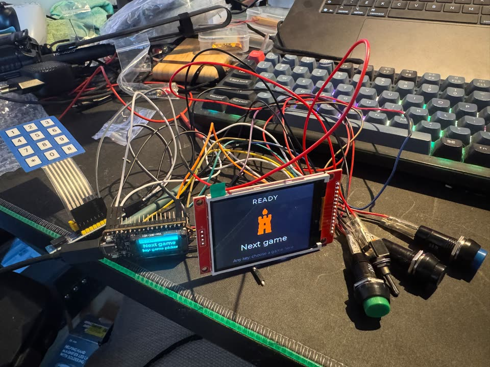
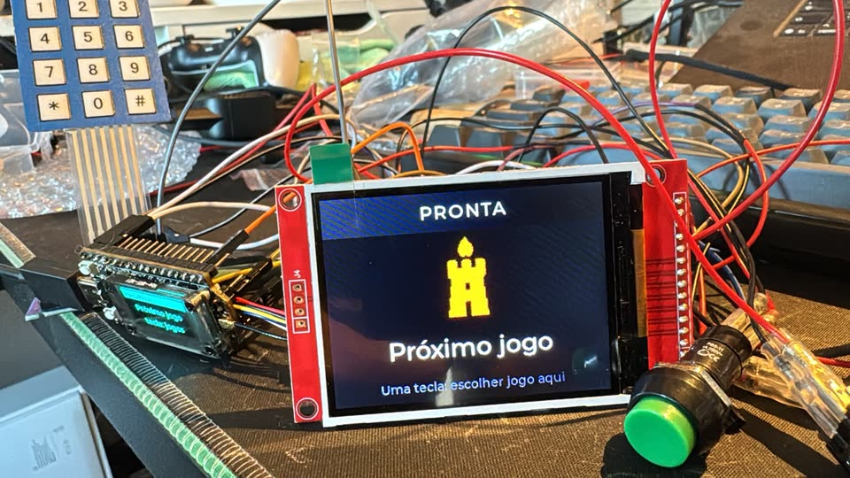

目前還沒有人照這些指南組裝出盒子，Field Box 也還沒有外殼。只有一個用散線連接、能玩遊戲的Field Box 工作台組裝。指南中的腳位會自動和韌體核對，但每一個實體步驟（外殼、電源、續航時間、無線電距離）都還沒測試過，其他盒子的照片要等它們的第一批成品才會有。如果你做了一個，請告訴我們你發現了什麼。
安全第一
這些規則適用於本頁的每一種組裝，和 Field Box 一樣。
- 開發板沒接 LoRa 天線時絕對不要通電，即使是 USB 供電也不行：對著空的天線接頭發射，可能會燒毀無線電的放大器。先把兩根天線都裝上，而且不要拆下來。
- 只能串接一顆鋰電池芯（1S，3.0–4.2 V）：使用有保護板的電芯、在電芯附近加保險絲，並加一顆二極體防止電芯裝反。開發板的電池插座和充電器只接受一顆電芯；2S 電池組會把它們燒壞。每次接線前都用電錶確認極性：小型電池插頭沒有統一的極性標準。
- 充電時要有人看著，絕不在密閉的盒子裡充電，只在約 0 到 45 °C 之間充電；作業時把電芯放在防火袋裡，而且電芯要從盒子裡拿出來。有凹痕、膨脹、發燙或電壓低於 2.5 V 的電芯絕對不要用。
- 只能把 3.3 V 訊號接進開發板：LED 燈環要經過電位轉換器驅動，每個 I2C 模組都必須把訊號線上拉到 3.3 V，絕不能是 5 V。
- 絕對不要接 GPIO 5 或 46（無線電的前端；唯一的例外是簡易輸出，接在你的開發板版本空出來的那一支：V4.3 是 46，V4.2 是 5），也不要接 GPIO 34 或 38–42（開發板的 GPS 接頭）。
- 完成發射功率檢查之前不要開始遊戲，這是啟用清單中的一項：韌體依據一個還沒實測過的放大器增益，把無線電維持在法定限制內。
- 用塑膠盒，絕不用金屬盒（無線電訊號要出得去），要防水，顏色鮮豔，貼上「GAME PROP」標籤，而且不能有任何看起來像爆裂物的東西。
- BB 彈和漆彈會打到它。電芯和開發板要遠離外殼壁、避開射擊線，手機螢幕要放在透明聚碳酸酯板後面（絕不能用玻璃），除非它本身就是標靶，否則絕不要把盒子放在玩家必須朝它射擊的位置。
Field Box
主要的道具，有隊伍按鈕、按鍵、彩色螢幕、LED 燈環、NFC 讀卡機和喇叭。它的組裝手冊（英文）包含零件、接線圖、電源與電池安全、第一次燒錄和故障排除；下面的指南凡是共通的步驟都參照它。
第一個工作台組裝
Field Box 現在不只存在於紙上，但目前只是工作台上的組裝：第一塊能玩完整場遊戲的開發板，螢幕、按鈕和按鍵都用散線連接，還沒有外殼。它不是成品，也不是照指南組裝出來的盒子。


腳位
韌體的預設值。不在這張表中的開發板腳位一律不接。
| 用途 | GPIO |
|---|---|
| 隊伍按鈕 1（遊戲的第一隊） | 4 |
| 隊伍按鈕 2（第二隊） | 48 |
| 隊伍按鈕 3，選用（開發板的 UART0 接收線） | 44 |
| 隊伍按鈕 4（在按鍵擴充晶片上） | PCF8574 P7 |
| 按鍵，經由 PCF8574 擴充晶片（位址 0x20） | PCF8574 P0–P6 |
| LED 燈環資料線，經過 74AHCT125 電位轉換器 | 35 |
| 螢幕 MOSI（SPI） | 33 |
| 螢幕時脈（SCK） | 47 |
| 螢幕晶片選擇（CS；開發板的電池電壓腳位，當作輸出使用） | 1 |
| 螢幕資料／指令（DC） | 3 |
| 螢幕 RESET 和背光：兩者都接 3V3 腳位，不用 GPIO | 3V3 |
| I2C SDA，給按鍵擴充晶片、NFC 讀卡機和電量計用（開發板自己的匯流排） | 17 |
| I2C SCL | 18 |
| 擴大器 BCLK（選用） | 6 |
| 擴大器 LRC | 15 |
| 擴大器 DIN | 16 |
| 被動式壓電蜂鳴器，選用（開機設定腳位：它的電路讓腳位保持低電位；韌體選項，尚未在硬體上組裝） | 45 |
GPIO 1、35 和 44 是 Field Box 刻意共用的開發板腳位，各自只用於這一個用途：1 是開發板的電池電壓輸入（電量計改由 I2C 讀取電池），35 是它的白色 LED（會隨燈環微微閃爍），44 是 UART0 的接收線（USB 主控台不受影響）。
接線圖
兩張圖，由程式庫中的 WireViz 檔案產生：一張是訊號和 3.3 V 邏輯電源，一張是電池、開關和 5 V 電源線。開發板的腳位只用 GPIO 編號稱呼：請依接頭旁印的編號找到每一支腳位。標示（腳位、電線、零件名稱）在所有語言中都維持英文，和程式庫一致；如果文字和圖不一致，以圖為準。


這張圖很寬：點一下就能以完整尺寸開啟，可以縮放和平移。深色主題下也放在白色底板上，讓電線顏色保持真實。
簡易輸出：警報器、閃光燈或煙霧機遙控
Field Box 和衛星盒的選用功能，也是盒子開關外部裝置的首選方式：透過市售的RC 繼電器開關（遙控模型用的那種），開關警報器、閃光燈、燈具或煙霧機的遙控器。一支 GPIO 經由電位轉換器空著的那一路送出伺服訊號：2.0 ms 是開、1.0 ms 是關，以每半秒一批的方式送出，而且只有進行中的遊戲會持續更新。盒子當機、重開或斷電時，脈衝會在 0.5 s 內停止，開關就會讓繼電器斷開。韌體從 0.7.0 版起以編譯選項提供這個功能；還沒有在硬體上組裝過。I/O 模組的韌體也有這個功能，接在 GPIO 33（和 1）：見 I/O 模組。
- 一個訊號停止時會讓繼電器斷開的 RC 繼電器開關：有文件說明、具備失訊保護的產品，或是通過工作台檢查後的副廠通用款。會保持最後狀態的開關絕對不能用。繼電器接點的規格要符合負載。
- 一個貼上「OUTPUT 1」標籤的 M8 3 針插座（第 1 針不接、第 3 針接地、第 4 針是訊號）、一顆在開發板開機時把腳位維持在低電位的 10 kΩ 電阻、一顆接到插座的 330 Ω 電阻，以及一條最長 2 m 的 3 芯線。它不是擴充埠的 M12 插座。
- 負載自己的電池，經過保險絲接到繼電器，再加一個給開關用的 5 V 穩壓器（模型用的「BEC」）：盒子只提供訊號和接地，絕不供電。
- 啟用簡易輸出編譯的韌體（
python tools/docker_fw.py build --simple-out=on）。腳位依開發板版本而定：V4.3 用 GPIO 46，V4.2 用 GPIO 5。第二路輸出接 GPIO 45（--simple-out=on2），只限沒有裝壓電蜂鳴器的盒子。 - 輸出預設關閉，要由場地管理員在盒子上用管理 PIN 啟用，並替每一路設定功能（警報器、閃光燈、煙霧、燈光、喇叭）和最長開啟時間。盒子在開機、暫停和遊戲結束時會關掉所有輸出（遊戲結束的喇叭最多還會響 10 s）。
只接低電壓負載（最高 24 V DC，建議 2 A），不管繼電器上印的規格是多少。絕不接市電，絕不接煙火；煙霧機只能透過有文件說明的低電壓遙控輸入。靠近警報器和喇叭要戴耳罩，沒有場地同意絕不在密閉室內放煙，也不要做出任何看起來像爆裂物的東西。
所有步驟和檢查：Field Box 組裝手冊（英文）第 9.10 節，以及每個 RC 開關在第一次上場前的工作台檢查，見啟用檢查清單第 8b 步（英文）。
衛星盒
用在次要據點或信標的小盒子：Field Box 的開發板加上兩個大的隊伍按鈕（可以再加第三個）、一個顯示佔領隊伍的 LED 燈環、開發板自己的小螢幕，以及一顆 18650 電芯。零件約 30–40 歐元（設計時的估計）。它執行的是 Field Box 自己的韌體，只是裝的零件比較少：韌體在開機時會把每個缺少的零件回報一次，然後繼續運作。
沒有按鍵，它沒辦法自己選遊戲：它玩的是場地控制器邀請它加入的遊戲，當作主站與衛星的衛星或主站，或當作任何只需要隊伍按鈕的模式（佔點、全佔點、最後一人）的據點。它透過 USB 線或小螢幕上的配對代碼加入場地（它沒有可以讀場地卡的 NFC 讀卡機）。
零件
- Heltec WiFi LoRa 32 V4 開發板，V4.2 或 V4.3 版，863–928 MHz，不含外殼。
- 一根 2 dBi 以下的 868 MHz 天線（開發板套件附的那根），以及一根 2.4 GHz 天線，這是必要的：第一次設定、下載模式和韌體更新都要用 Wi-Fi。
- 兩個（或三個）附 5 V LED 的 60 mm 大型街機按鈕。
- 一個 WS2812B LED 燈環（預設 24 顆 LED；改一個韌體設定就能用 12 或 16 顆），搭配 74AHCT125 電位轉換器、一顆 330 Ω 電阻和一顆 1000 µF 電容，焊在一小塊洞洞板上。
- 建議加一顆 MAX17048 電量計：沒有它，盒子永遠不知道自己的電量。
- 一顆裝在電池座裡、有保護板的 18650 電芯（或一組附保護板的 1S 電池組）、一個 5 A 保險絲、一顆蕭特基二極體、一個有護蓋的主開關、一個給燈環用的 5 V 升壓模組，以及快速接線端子：也就是只用一顆電芯的 Field Box 電源線路。
- 聲音是選用的：一個被動式壓電蜂鳴器（最便宜：用韌體選項把遊戲的聲音播成短短的音調組合；尚未在硬體上組裝）、Field Box 的 MAX98357A 擴大器和一個小喇叭，或兩者都裝。
- 簡易輸出是選用的：透過 RC 繼電器開關控制警報器、閃光燈、燈具或煙霧機的遙控器，和 Field Box 一樣。會響警報器的主控盒或衛星盒不需要其他盒子。尚未在硬體上組裝。
- 一個顏色鮮豔的 IP65 塑膠盒，有透氣孔和電纜固定頭，貼上「GAME PROP」標籤。
腳位
韌體的預設值。不在這張表中的開發板腳位一律不接。
| 用途 | GPIO |
|---|---|
| 隊伍按鈕 1（遊戲的第一隊） | 4 |
| 隊伍按鈕 2（第二隊） | 48 |
| 隊伍按鈕 3，選用（開發板的 UART0 接收線） | 44 |
| LED 燈環資料線，經過 74AHCT125 電位轉換器 | 35 |
| I2C SDA，給電量計用（開發板自己的匯流排） | 17 |
| I2C SCL | 18 |
| 擴大器 BCLK（選用） | 6 |
| 擴大器 LRC | 15 |
| 擴大器 DIN | 16 |
| 被動式壓電蜂鳴器，選用（開機設定腳位：它的電路讓腳位保持低電位；韌體選項，尚未在硬體上組裝） | 45 |
韌體仍然會驅動 Field Box 的螢幕腳位（GPIO 1、3、33 和 47）：這些腳位不要接。
它的接線是 Field Box 的子集：照著 Field Box 的接線圖接，省略這個版本沒有的零件（彩色螢幕、按鍵和 NFC 讀卡機）。它自己的接線圖還沒有畫。
步驟
- 看開發板 LoRa 天線接頭旁邊的晶片：KCT8103L 是 V4.3（韌體的預設值），GC1109 是 V4.2。在開發板第一次通電之前，就把兩根天線裝好並貼上標籤。
- 先在紙上規劃盒子，在放進任何電子零件之前把所有孔都鑽好：按鈕和燈環在蓋子上，開關要內嵌或加蓋，透氣孔開在下方。
- 先在不接開發板的情況下做好電源線路：電芯、保險絲、二極體、開關、接線端子；在接上任何東西之前，先單獨把升壓模組調到 5.0–5.2 V。
- 做那塊小小的轉接板：3V3、GND 和 5V 電源軌（以及給電量計用的 SDA 和 SCL）和電位轉換器，照 Field Box 手冊的做法。
- 依照上面的腳位，接好按鈕（按下時接 GND）、經電位轉換器的燈環、電量計，以及選用的擴大器。
- 如果要裝簡易輸出：電位轉換器空著的那一路從 GPIO 46（V4.3）或 5（V4.2）接入，加一顆 10 kΩ 接 GND，再經 330 Ω 接到 M8 插座的第 4 針；開關由負載的電池供電，絕不由盒子供電。GPIO 對 GND 量起來是 10 kΩ，插座第 4 針和 3V3 或 5 V 之間都不導通。
- 拔掉電芯，用電錶檢查：電源軌之間沒有短路，每個按鈕只在按下時導通，以及開發板電池線的極性。
- 依照 Field Box 手冊的說明建置並燒錄 Field Box 韌體，設定成你的開發板版本和燈環的 LED 數量。
- 執行適用於衛星盒的啟用步驟：開機、按鈕、LED、電池，以及在任何遊戲之前檢查無線電和它的發射功率。
- 用手機在它的 Wi-Fi 設定頁面設定名稱、地區和管理 PIN 碼，透過 USB 線或配對代碼把它綁定到你的場地，再從 GM 控制台邀請它加入遊戲。
尚未決定
- 原始設計中的壓電蜂鳴器：韌體已能驅動它（編譯選項，接 GPIO 45），但還沒有在真正的板子上組裝並試聽過。
- 外殼：還沒選定盒子。
- 一顆電芯的續航時間：還沒量測。
- 專屬的接線圖：目前 Field Box 的接線圖已經涵蓋衛星盒的每一條線。
完整指南：衛星盒組裝指南（英文）。
I/O 模組
這個盒子把手機缺少的東西借給 Android 道具：大的隊伍按鈕、按鍵、LED 燈環、聲音、NFC 讀卡機、一個偵測盒子被打開的開關，以及 LoRa 無線電。手機執行遊戲模式；I/O 模組透過 USB 線或藍牙，當它的手和它的無線電。它就是沒有彩色螢幕的 Field Box 硬體，執行 I/O 模組韌體，這個韌體已在電腦上測試過，但還沒在開發板上跑過。零件約 35 歐元（設計時的估計）。
除了開發板以外，每個零件都是選用的：I/O 模組會告訴手機自己有什麼，手機就只用那些。和 Field Box 一樣，按鈕 1 是遊戲的第一隊。外殼被打開時，GM 控制台會收到防拆警報。
簡易輸出（選用）：透過 RC 繼電器開關控制警報器、閃光燈、燈具或煙霧機的遙控器，接法和 Field Box 的簡易輸出一樣，只是接在 GPIO 33（第二路接 GPIO 1，有沒有裝壓電蜂鳴器都可以）。I/O 模組沒有管理員 PIN，所以把輸出編進韌體就等於啟用它，連同它的用途（警報器、閃光燈、煙霧、燈、喇叭）和最長開啟時間。手機上的遊戲用盒子的規則開關它，而 I/O 模組會自己關掉它：和手機的連線一斷就立刻關，手機停止回應 1.5 s 後也會關。
擴充埠（選用）：Field Box 的 M12 插座和擴充埠板，接在 I/O 模組的 I2C 匯流排上（GPIO 17 和 18）。標靶擴充模組被擊中時，只要遊戲在進行，就會送到手機上的遊戲。I2C 輸出模組的繼電器，只有編譯成要出借它們的 I/O 模組才會借給遊戲（預設關閉），手機一離開，I/O 模組就會把它們關掉。裝了所有零件的 I/O 模組，向手機描述自己的空間所剩不多：能放下幾路輸出就出借幾路（從最前面的開始），其他的保持關閉。輸出和擴充埠都已寫進 I/O 模組韌體，但只在電腦上測試過：還沒有任何 I/O 模組開關過真正的繼電器，或感應過真正的靶板。
零件
- Field Box 的零件，少了螢幕：開發板、按鈕（最多四個）、按鍵和它的 PCF8574 擴充晶片、附電位轉換器的 LED 燈環、PN532 NFC 讀卡機、擴大器和喇叭、電量計，以及同樣只用一顆電芯的電源線路。
- 兩根天線：LoRa，以及給藍牙用的 2.4 GHz。
- 一個由蓋子蓋上時壓住的微動開關：也就是外殼開關。
- 一個面板式 USB-C 插座，要有資料線（不能只能充電），接手機的線用；以及一條給手機用的 USB-C OTG 線。
- 只在工作台上用：一個 3.3 V USB 轉序列埠轉接器，用來讀 I/O 模組的紀錄。
- 選用，每一路簡易輸出：一個訊號停止時會斷開的 RC 繼電器開關、74AHCT125 空著的一路、10 kΩ 和 330 Ω 電阻，以及一個 M8 插座，和 Field Box 一樣。
- 選用：擴充埠的 M12 插座和擴充埠板，和 Field Box 一樣。
腳位
韌體的預設值。不在這張表中的開發板腳位一律不接。
| 用途 | GPIO |
|---|---|
| 隊伍按鈕 1（遊戲的第一隊） | 4 |
| 隊伍按鈕 2（第二隊） | 48 |
| 隊伍按鈕 3，選用（開發板的 UART0 接收線） | 44 |
| 隊伍按鈕 4（在按鍵擴充晶片上） | PCF8574 P7 |
| LED 燈環資料線，經過 74AHCT125 電位轉換器 | 35 |
| I2C SDA，給按鍵擴充晶片、NFC 讀卡機和電量計用（開發板自己的匯流排） | 17 |
| I2C SCL | 18 |
| 擴大器 BCLK（選用） | 6 |
| 擴大器 LRC | 15 |
| 擴大器 DIN | 16 |
| 外殼開關，接 GND | 47 |
| 簡易輸出 1，選用（經過 74AHCT125 空著的一路） | 33 |
| 簡易輸出 2，選用（開發板的電池電壓腳位，I/O 模組沒有使用） | 1 |
| 紀錄輸出（UART0 TX）：只接 3.3 V USB 轉序列埠轉接器的 RX，限工作台上使用 | 43 |
GPIO 33 和 1 在 I/O 模組上沒有用到，可以接選用的簡易輸出；GPIO 3，以及你沒用到的輸出腳位，都不要接。擴充埠不佔用自己的 GPIO。
I/O 模組的接線就是沒有螢幕的 Field Box：照著 Field Box 的接線圖接，省略螢幕和它的線。它自己的接線圖還沒有畫。
步驟
- 把它當成沒有螢幕的 Field Box 來組裝：開發板版本、天線、外殼、電源線路、轉接板，再加上你要裝的按鍵、燈環、NFC 讀卡機、按鈕和擴大器，每一項都照手冊做檢查。
- 把微動開關裝在蓋子蓋上時會壓到的位置，從 GPIO 47 接到 GND。I/O 模組要先讀到一次「關閉」之後才會開始監看它，所以沒裝開關的 I/O 模組永遠不會發出警報。
- 建置 I/O 模組韌體（
python tools/docker_fw.py pod；要一路輸出加--simple-out=on，兩路用on2，要出借輸出模組的繼電器加--module-outputs=on），並從build-pod資料夾燒錄，做法和 Field Box 一樣。開機紀錄會列出它出借的每一路輸出。 - 用 USB 轉序列埠轉接器從 GPIO 43 讀它的紀錄：USB-C 埠負責 I/O 模組和手機之間的連線，不輸出紀錄。
- 在 App 中先用 USB-C OTG 線連結它，再用藍牙連結（Android 會要求配對一次）。
- 執行 I/O 模組的啟用檢查，包括在任何遊戲之前檢查無線電的發射功率。
尚未決定
- 在真正的 I/O 模組上使用輸出和模組：簡易輸出和擴充埠已寫進 I/O 模組韌體並在電腦上測試過，還沒用真正的繼電器、靶板或手機試過；接下來是工作台測試。
- 由手機供電：接上線時，手機會供電給 I/O 模組，也可能替它的電芯充電。是否應該這樣、手機能提供多少電，要在第一次組裝時確認。
- 外殼，以及手機和 I/O 模組要怎麼一起攜帶。
- 設定：GM 控制台可以用無線電送出按鈕顏色、燈環亮度、音量，以及外殼開關是否回報；LED 數量、腳位和輸出則在建置韌體時設定。
完整指南：I/O 模組組裝指南（英文），以及啟用清單中搭配手機的 I/O 模組檢查。
無線電數據機
場地控制器的無線電：第二塊 Heltec WiFi LoRa 32 V4，燒錄數據機映像檔後插在場地控制器的 USB 埠。沒有它，控制器仍會運作、控制台也打得開，但訊息到不了盒子，也聽不到盒子的訊息。它沒有 Wi-Fi，所以只需要 LoRa 天線。
照這樣燒錄的數據機，已在工作台上和控制器及真實盒子一起運作過（一台電腦，控制器跑在 Docker 裡）。尚未在 Raspberry Pi 上跑過，也沒在 macOS 上試過，更沒在場地上用過。
步驟
- 在板子通電之前先裝好 LoRa 天線，燒錄時也一樣，並使用 USB-C 資料線。先決定無線電區域：數據機和盒子必須相同。
- 從發佈頁面下載
atalaia-modem-<版本>-usb.zip和SHA256SUMS（V4.3、EU868），或自行編譯：python tools/docker_fw.py modem（V4.2、台灣、其他天線）。 - 用 esptool 4.8.1 清除新板子，再寫入
flash_args列出的檔案：esptool --chip esp32s3 -p PORT write_flash "@flash_args"，Windows 的埠是COM5，Linux 是/dev/ttyACM0，macOS 是/dev/cu.usbmodem…。在 Linux 上要先加入dialout群組。 - 板子的螢幕會顯示塔和 MODEM MODE，接著是
LINK waiting（等待）。這表示數據機正常，只是還沒有控制器。RADIO FAULT 表示無線電晶片沒有啟動。 - 把它插到控制器，找出它的埠（
ls /dev/ttyACM*），填入/etc/atalaia/controller.toml的[modem] port，然後重新啟動服務（sudo systemctl restart atalaia-controller）。 - 螢幕顯示 LINK OK（正常），控制台標頭顯示「無線電: 正常」，控制器的記錄裡有
modem link up。 - 打開一個已綁定的盒子，建立遊戲並邀請該盒子：狀態會依序是傳送中、已邀請、已加入，數據機的螢幕會累計封包數。
每個系統的完整指令、如何找到埠，以及故障排除表（只能充電的線、埠錯誤、埠被其他程式佔用、dialout、區域不符、LINK waiting 或 DOWN、RADIO FAULT、分割表錯誤）：Set up the radio modem（英文）。
擴充埠
已設計，尚未組裝；盒子的韌體已經使用它。現在就可以組裝擴充埠，並用電錶和盒子本身的零件檢查。從擴充埠計畫的第 8 步起，盒子的擴充埠驅動程式在遊戲中執行：模組插上後 2 秒內就會被找到、讀取並列出。這些只在電腦上對著模擬的模組測試過，還沒在真正的擴充埠上試過。
盒子上一個防水的 5 針 M12 插座，模組從外面插上去：現在是標靶擴充模組，之後還有接點和其他感測器。它就是盒子自己的 I2C 匯流排（按鍵、NFC 讀卡機、電量計和小螢幕用的那條）從外殼引出來，後面接一塊小小的擴充埠板，避免潮濕、短路或帶靜電的線材讓盒子當掉。它不佔用任何 GPIO，所以腳位表都不用改。Field Box、衛星盒和 I/O 模組都可以選裝：只有要接標靶或感測器的盒子才需要。零件約 6–14 歐元（設計時的估計）。
警報器、閃光燈或煙霧不接這裡：它們用簡易輸出。擴充埠是給輸入用的，也可以給需要更多通道的盒子接 I2C 輸出模組。
零件
- 一個母頭 M12 A-coded 5 針面板插座（IP67；因為第 1 針帶電，接點是內凹的）附防塵蓋，以及一條現成的 M12 A-coded 5 芯公對母感測器延長線，最長 2 m，接到模組。
- 一顆裝在模組板上的 TCA4307 熱插拔緩衝器：只在兩邊都閒置時才把擴充埠接上盒子的匯流排，短路或潮濕的線材把某條線拉低時就把它切開，讓按鍵、NFC 讀卡機、電量計和螢幕繼續運作。
- 一組低電容 TVS 陣列（USBLC6-2SC6 等級，裝在轉接板上）和兩顆 100 Ω 電阻，擋住手或線材在插座上帶來的靜電。
- 一顆 50 mA 可自恢復保險絲，防止第 1 針和第 3 針短路；以及一顆小型蕭特基二極體（BAT85 等級），讓線材上的任何東西都無法反向供電給盒子的 3.3 V：模組收到的大約是 3.0 V。
- 擴充埠這一側的兩顆 2.2 kΩ 上拉電阻（模組本身不裝）、一小塊洞洞板，以及接到轉接板 3V3、GND、SDA 和 SCL 電源軌的電線。
擴充埠的腳位
M12 的腳位配置，附上線材常見的線色（請用電錶確認）。SDA 和 SCL 就是盒子的 I2C 匯流排，接在緩衝器後面。
| 用途 | M12 針腳 | GPIO |
|---|---|---|
| 棕：3.3 V（經過二極體後約 3.0 V），最多 25 mA，只供模組的邏輯電路使用 | 1 | – |
| 白：SDA，100 kHz | 2 | 17 |
| 藍：接地 | 3 | – |
| 黑：SCL | 4 | 18 |
| 灰：兩端都不接，絕不當電源或訊號用 | 5 | – |
模組使用 0x58–0x5F 的位址，避開盒子上所有零件：輸入模組從 0x58 開始（標靶），輸出模組從 0x5C 開始。一個盒子最多接四個，但擴充埠只有一個插座，分接器也還沒設計，所以指南是一個盒子接一個模組。
步驟
- 在外殼側面或底部鑽插座的孔，遠離天線和簡易輸出的插座，讓從地面來的線材不必急彎就能接上，而且不要朝向射手。貼上「EXPANSION 3.3 V」標籤。
- 在約 3 × 4 cm 的洞洞板上配置擴充埠板：一邊是盒子那側，另一邊是插座那側，緩衝器在中間，TVS 緊靠插座的排針。
- 先量模組板自帶的上拉電阻：算進去之後，盒子的匯流排到 3V3 仍要在 1 到 3.9 kΩ 之間，擴充埠那側合計約 2.2 kΩ。
- 接好電源（轉接板的 3V3、二極體、保險絲、擴充埠的 3.3 V）、經過緩衝器、100 Ω 電阻和 TVS 的訊號線、短短的接地線，以及照線材顏色接的插座引線；第 5 針的引線剪短並絕緣。
- 拔掉電池和 USB，用電錶檢查：第 1 針和第 3 針之間沒有短路、第 5 針開路、二極體方向正確，指南說的地方約為 100 Ω 和 2.2 kΩ。
- 第一次通電，什麼都不插：第 1 針約 3.0 V，按鍵、NFC 讀卡機和電量計照常運作，插上 2 m 線材時也一樣。
- 現在就能做的工作台測試：線材遠端的上升時間（用示波器量，要低於 1 µs）、SDA 短路時按鍵仍能運作、第 1 針和第 3 針短路時盒子不會重開，以及插座上的靜電。請把量測結果開 issue 告訴我們。
擴充埠的規則
- 每一針永遠只有 3.3 V：5 V 和電池電壓都絕不能進到擴充埠，第 5 針保持不接。
- 絕不要從擴充埠供電給負載：它的 25 mA 是給模組的處理器和感測器用的。光是一顆 WS2812 LED 就會用到 60 mA。
- 絕不要插上沒有處理器的 PCF8574 或 MCP23017 繼電器板，或任何沒有自己處理器的 I2C 板：盒子當機時它的繼電器會一直開著，而且它會在盒子尋找按鍵的位址上回應。
- 沒插東西時蓋上插座，線材沿地面走，絕不經過射擊線。擴充埠兩側都絕不碰觸市電。
盒子對擴充埠的回報
盒子在序列埠紀錄（USB，115200 baud）中，找到模組時會寫一行（expansion: 0x58 added: 58:target/1.0.0:hit），模組不再回應時也會寫（expansion: 0x58 lost (no_answer)），遊戲中每次命中也有一行。序列埠控制台的 @modules 會列出模組；遊戲中，GM 控制台會在每個盒子下方以標籤顯示它的模組。韌體的啟用檢查清單有擴充埠的步驟。
工作台測試之後：需要真正硬體的項目
- 擴充埠搭配模組的工作台測試：遊戲進行中插拔 100 次，每次插上都在 2 秒內被找到（測試 3）；在切換中的 12 V 警報器和閃光燈旁放 30 分鐘，計算 CRC 錯誤和漏掉的讀取（測試 6）。只要做好一個標靶模組就能測試；請在 issue 中回報你量到的結果。
尚未決定
- 讓一個盒子接多個模組的分接器。
- 裝有擴充埠板的載板（在那之前用洞洞板），以及擴充埠的接線圖，可能在第一次組裝後補上。
完整指南，包含所有零件、組裝、位址、檢查和故障排除：擴充埠組裝指南（英文）。背後的決定記錄在 RFC 草案 The expansion port（英文）。
標靶擴充模組
已經可以組裝，韌體也已完成；還沒在真正的靶板或盒子上試過。擴充埠計畫的第 8 步寫好了模組的韌體、確定了它的腳位，並把 UF2 檔放進發佈版本；盒子現在會讀取模組，並把每次命中交給模式的腳本。這些都只在電腦上對著模擬的模組測試過。你現在就可以組裝標靶、燒錄並插到盒子的擴充埠；耗電、感測器的調校和分壓電阻在第一次組裝時決定（見下方）。目前還沒有人照指南做出標靶。
一塊讓玩家射擊的靶板，有一個感應每次命中的壓電感測器，以及一塊自己的小型 RP2040 開發板（標靶模組）。它插到盒子的擴充埠，就能把盒子變成標靶時窗的計分標靶；標靶時窗的規則已完成，並在模擬器中測試過，也和模擬的標靶做過端對端測試。時窗由盒子自己的燈環顯示，所以模組不需要燈。任何有擴充埠的盒子都能接：Field Box、衛星盒或 I/O 模組。
壓電片黏在靶板背面，把命中轉成一個短暫的電壓尖峰；模組找出尖峰值，也就是 0 到 255 的力道，並保存最多 16 次命中和它們的時間，直到盒子讀走。盒子每 20 ms 透過擴充埠讀一次，大約占匯流排的 5%，所以命中約 21 ms 就會傳到遊戲，而且不會重複計算。遊戲腳本只在遊戲進行時收到每次命中，也就是帶著力道的 hit.hit，也可以啟動和解除標靶。模組約 10–15 歐元，另加靶板、線材和盒子的擴充埠（設計時的估計）。
零件
- 一塊 RP2040 開發板，RP2040-Zero 等級或 Raspberry Pi Pico，以 48 MHz 執行，耗電才能在擴充埠的 25 mA 以內。
- 一片 27–35 mm 的壓電片（多買幾片備用：容易裂）、一塊 2–3 mm 的橡膠墊和強力膠。
- 感測器電路：一顆 1 MΩ 洩放電阻、兩顆裝在插座上的分壓電阻（阻值要在真正的靶板上決定），以及兩顆 BAT85 等級的蕭特基二極體，讓處理器的輸入保持在接地和 3.3 V 之間。
- 一顆 P 通道 MOSFET（AO3401 或 SI2301 等級）和一顆 10 kΩ 電阻：保護模組，以免手工線材接反。
- 兩個焊接跳線（或一個 2 位 DIP 開關）設定位址：兩個都斷開是 0x58，0x59–0x5B 給同一個盒子上的第二個標靶。
- 一顆 3 mm LED 和一顆 1 kΩ 電阻：盒子要模組現身時它會閃爍，方便在場地上找到它。
- 一個公頭 M12 A-coded 5 針面板插頭、M12 延長線（最長 2 m）、一個小型 IP65 外殼、洞洞板和電線。
- 一塊鋼板或聚碳酸酯板，以及靶架。
模組的腳位
依模組韌體的用法：RP2040-Zero 和 Pico 上的 GPIO 編號相同。其他腳位都不接。
| RP2040 腳位 | 用途 |
|---|---|
| 3V3 | 電源，約 3.0 V：M12 第 1 針（棕），經過 MOSFET。Pico 還要把 3V3_EN 接地 |
| GND | 接地：M12 第 3 針（藍） |
| GP4 | I2C SDA，不裝上拉電阻：M12 第 2 針（白） |
| GP5 | I2C SCL，不裝上拉電阻：M12 第 4 針（黑） |
| GP26 | 壓電片的輸入電路（ADC0） |
| GP27 | 第二塊靶板的輸入電路（ADC1），只用於雙靶板韌體 |
| GP2 | 位址跳線接地：加 1 |
| GP3 | 位址跳線接地：加 2 |
| GP14 | LED 的陽極；陰極經 1 kΩ 接地 |
步驟
- 先做好並檢查盒子的擴充埠。
- 電源：M12 第 1 針經過 MOSFET 接到 RP2040 開發板的 3V3 腳，絕不接它的 5 V、VBUS、VSYS 或 USB 腳；第 3 針接地；第 5 針剪短並絕緣。RP2040-Zero 自己的穩壓器這時不會通電；Pico 則要把 3V3_EN 接地，關掉它的穩壓器。
- 把壓電片連同橡膠墊黏在靶板背面正中央；洩放電阻跨接在它的引線上，再經過分壓電阻和二極體，接到 GP26（雙靶板模組的第二個輸入電路接 GP27）。
- SDA（第 2 針）接 GP4，SCL（第 4 針）接 GP5，模組裡不裝上拉電阻；位址跳線從 GP2 和 GP3 接地，兩個都斷開就是 0x58；LED 接 GP14。
- 外殼放在靶板後面，固定在靶架上而不是靶板上，插頭背對射手，線材往下沿著地面接到盒子。
- 模組不通電，用電錶檢查：第 1 針和第 3 針之間沒有短路、第 5 針開路、第 2 和第 4 針沒有上拉電阻、兩顆二極體量起來是二極體、壓電片兩端約 1 MΩ。
燒錄模組
模組的韌體是一個 UF2 檔，用 USB 手動燒錄，絕不透過無線更新，而且模組要先從盒子拔下：絕不要同時插上它的 USB 線和擴充埠的線。
- 取得 UF2 檔：從 0.7.0 之後的第一個發佈版本起下載
atalaia-target-module-<版本>.uf2（雙靶板用atalaia-target-module-2-<版本>.uf2），並用該版本的SHA256SUMS核對：模組檔案沒有簽章。也可以用python3 tools/docker_module.py build自己編譯。 - 燒錄：按住開發板的 BOOT 鍵，同時把它的 USB 線插到電腦，把 UF2 檔拖進出現的磁碟（
RPI-RP2），開發板重新啟動後拔掉 USB 線。 - 插到盒子的擴充埠：2 秒內，盒子的序列埠紀錄會出現
expansion: 0x58 added: 58:target/1.0.0:hit，序列埠控制台的@modules也會列出這個標靶。 - 在遊戲中試用：在盒子上開始標靶時窗；靶板會被啟動，輕敲一下就會記錄
expansion: hit hit, strength <n>。
工作台測試之後：需要真正硬體的項目
- 模組的耗電和 3V3：在 48 MHz 下低於 25 mA，用電錶串接在第 1 針上量（工作台測試 4），運作時 3V3 腳約 3.0 V。
- 門檻值、間隔時間和力道刻度：在真正的鋼板和聚碳酸酯板上，以場地的能量上限並戴著護目鏡調校（工作台測試 8）。韌體的預設值（門檻 300／4095、間隔 50 ms）只是起點。
- 分壓器的兩顆電阻，在同一個測試中選定（所以裝在插座上）：遠距離的命中要明顯高於門檻，正打在壓電片上方的命中不能碰到二極體的限制。
- 擴充埠搭配模組的測試：遊戲中插拔和警報器旁的干擾，見擴充埠的清單。
- 標靶在工作台測試過後，標靶時窗成為 Field Box 的內建預設模式；在那之前，場地可以像其他模式一樣把它放到盒子上。之後在第 9 步，I/O 模組也能把標靶借給手機。
尚未決定
- 靶板：材質等級、尺寸、厚度、靶架和角度，由第一批成品決定。
- 模組的載板；在那之前用洞洞板。
只要有人朝它射擊時的安全事項
- 在工作台上：絕不要同時插上模組的 USB 線和擴充埠的線，插上模組前先摸一下盒子的接地。
- 護目鏡和面罩：有人朝它射擊時，射程內的每個人都要戴，在工作台上也一樣。
- BB 彈打到硬靶板會反彈，有些會彈回來：鋼板要斜放，讓 BB 彈往地面彈，絕不能正面對著射手。
- 只有靶板是標靶：絕不要射盒子、線材或接頭，電子零件要放在靶板後面或它們自己的外殼裡。
- 射擊標靶和射擊玩家一樣，都要遵守場地的能量限制。
所有步驟、檢查和決定，以及還在等待工作台測試的項目：標靶擴充模組組裝指南（英文）。
I2C 輸出模組
已設計，尚未組裝；較後期且為選配。它的韌體已寫好（擴充埠計畫的第 11 步），只在電腦上測試過：可以為 RP2040 編譯，UF2 檔隨發佈版本提供，但從未在開發板上執行過，也沒有盒子控制過真正的模組。目前還沒有人照指南做出這個模組。
一個接在盒子擴充埠上的模組，透過繼電器或 MOSFET 開關最多四個負載（警報器、閃光燈、喇叭、煙霧機的低電壓遙控輸入），電源來自它自己的電源。一塊小型 RP2040 開發板執行它的韌體：盒子只有在持續寫入時才會讓輸出保持開啟（盒子停止寫入 1.5 秒後所有輸出都會關閉），模組也有自己的硬性限制，也就是每個通道的最長開啟時間和最短關閉時間，外加第二道獨立的保護。不含電源和負載約 25–35 歐元（設計時的估計）。
一顆 I2C 隔離器（ISO1540 或 ADuM1250 等級）讓匯流排跨過一道隔離屏障：盒子的接地和模組的接地永遠不相連，所以繼電器的突波、負載的短路或接反的電池都只留在模組這一側。隔離器的盒子側是擴充埠 3.3 V 上唯一的負載（幾 mA）；其他一切都由模組自己的 9–15 V 輸入供電（一顆 12 V 電池，或警報器本身的電池）。
先用簡易輸出：只接一個警報器、一個閃光燈或一個煙霧遙控時，它更便宜、更簡單，也不需要自己的韌體。這個模組是給需要的通道比空閒腳位還多，或想知道負載電源是否正常的盒子用的。
輸出模組的規則
- 絕不接市電。它只開關安全特低電壓（SELV）負載：最高 24 V DC、每個通道最多 2 A。它裡面、上面或接到它的任何東西都絕不碰 230 或 110 V 的線路，即使經過額定足夠的繼電器也不行；市電設備需要一個市售、經過認證、封閉式、有低電壓控制輸入的開關裝置。
- 煙霧機只能透過它有文件記載的低電壓遙控輸入（製造商手冊中寫明的接點輸入或低電壓觸發），或是設計成以接點觸發的電池式煙霧裝置。許多便宜的市電煙霧機，有線遙控的線材上帶有市電：絕不要在裡面接繼電器，也絕不要拆開。如果手冊沒有白紙黑字寫明，就不要使用那台機器。
- 絕不接煙火、點火器或煙霧彈。
- 絕不要改用沒有處理器的 PCF8574 或 MCP23017 繼電器板接在擴充埠上：它沒有自己的時間限制，盒子當機時繼電器會一直開著。
零件
- 一塊 RP2040 開發板：Raspberry Pi Pico 或 RP2040-Zero。
- 一塊 I2C 隔離器轉接板，ISO1540 或 ADuM1250 等級，有兩組分開的電源和接地；盒子側的上拉電阻要拆掉（擴充埠板已經有了）。
- 一顆 P 通道 MOSFET（AO3401 或 SI2301 等級）和一顆 10 kΩ 電阻，避免接反的手工線材反向供電給隔離器。
- 一塊 4 通道、光耦隔離、高電位觸發的繼電器板（輸入高電位就是繼電器開啟，或把觸發跳線設在高電位），5 V 線圈，接點至少 2 A／30 V DC，每個輸入加一顆 10 kΩ 下拉電阻，讓開發板重置或燒錄時所有繼電器都保持關閉。或是一塊為 3.3 V 邏輯設計的 MOSFET 板，用於經常開關的直流負載，例如閃光燈。
- 它自己的電源：9–15 V DC 輸入、一顆 1 A 慢熔保險絲、一顆 1N5819 等級的蕭特基二極體防止電池接反，以及一個調到 5.0 V 的降壓轉換器（MP1584 或 LM2596 等級），供電給 RP2040 開發板和繼電器線圈。
- 每個負載：有自己的電池和最多 2 A 的保險絲，經過繼電器的乾接點（COM 和 NO），馬達式警報器、喇叭或任何線圈都要並聯一顆飛輪二極體。
- 一個公頭 M12 A-coded 5 針面板插頭和 M12 線材（最長 2 m）、一個約 150 × 110 × 70 mm、附電纜固定頭的塑膠 IP65 外殼、一顆狀態 LED、洞洞板、電線和標籤（「SELV ONLY, NEVER MAINS」）。
模組的腳位
依模組韌體的用法，都在 Pico 或 RP2040-Zero 的排針上；M12 的針腳只接隔離器的盒子側，第 3 針（盒子的接地）不接其他任何東西。
| RP2040 腳位 | 用途 |
|---|---|
| GP4 | I2C SDA：隔離器的模組側（4.7 kΩ 接到它的 3.3 V） |
| GP5 | I2C SCL：隔離器的模組側（4.7 kΩ 接到它的 3.3 V） |
| GP6 | OUT 1：繼電器板的 IN1，高電位為開；10 kΩ 接地 |
| GP7 | OUT 2：IN2；10 kΩ 接地 |
| GP8 | OUT 3：IN3；10 kΩ 接地 |
| GP9 | OUT 4：IN4；10 kΩ 接地 |
| GP2 | 位址跳線接地：加 1 |
| GP3 | 位址跳線接地：加 2 |
| GP14 | 狀態 LED 的陽極；陰極經 1 kΩ 接地 |
| GP26 | 電源偵測（選配）：從負載電池接出的 100 kΩ / 22 kΩ 分壓器 |
兩個跳線都斷開時位址是 0x5C（接上時為 0x5D–0x5F）。降壓轉換器的 5 V 接到 Pico 的 VSYS 或 RP2040-Zero 的 5 V 腳，開發板的 3V3 接到隔離器的模組側。
燒錄和第一次通電
- 取得 UF2 檔：從 0.7.0 之後的第一個發佈版本起下載
atalaia-output-module-<版本>.uf2，並用它的SHA256SUMS核對（沒有簽章）。它使用預設的通道清單：四個通用繼電器，每個最多 30 秒，適合第一次工作台測試；接其他負載時，用實際裝上的通道清單自己編譯（python3 tools/docker_module.py build）。 - 在關掉電源、拔掉 M12 線、斷開負載的狀態下燒錄：按住開發板的 BOOT 鍵，同時把它插到電腦的 USB，把 UF2 檔複製到出現的磁碟，然後拔掉 USB。
- 第一次通電，負載斷開：通電時或 20 次開關電源後，都沒有任何繼電器發出喀聲，LED 保持熄滅（快速閃爍表示韌體拒絕了它的通道清單）。
- 接到盒子上：盒子會找到
5c:out4/1.0.0，它的輸出在盒子的管理者於盒子上啟用之前都保持關閉，啟用時要設定每個通道的功能和最長開啟時間；接著管理者的 1 秒測試會依序讓每個繼電器喀一聲。
工作台測試之後：需要真正硬體的項目
- 1.5 秒內關閉：繼電器開著時，每次盒子斷電、重置，或線材被剪斷、拔掉，都要關閉（工作台測試 5，用影片計時）。
- 隔離器在擴充埠的 3.0 V 下運作（它工作範圍的下限），以及匯流排經過它和擴充埠緩衝器後的低電位（用示波器）；模組從擴充埠吸取的電流（預計幾 mA）。
- 繼電器能否在 3.3 V 下吸合、線圈電流、模組自己電源的電流和輸入保險絲的規格、用電錶核對電源偵測，以及真正開發板上的看門狗和保護機制。
- 干擾：12 V 警報器和閃光燈在盒子和線材旁開關 30 分鐘，計算 CRC 錯誤和漏掉的讀取（工作台測試 6）。
- 煙霧：電池式煙霧裝置，或有文件記載低電壓輸入的煙霧機，由炸彈模式的爆炸觸發，並由 GM 的「全部輸出關閉」和遊戲結束停止（工作台測試 10）。
所有零件、兩側、電源、負載、腳位、檢查，以及還在等待工作台測試的項目：I2C 輸出模組組裝指南（英文）。